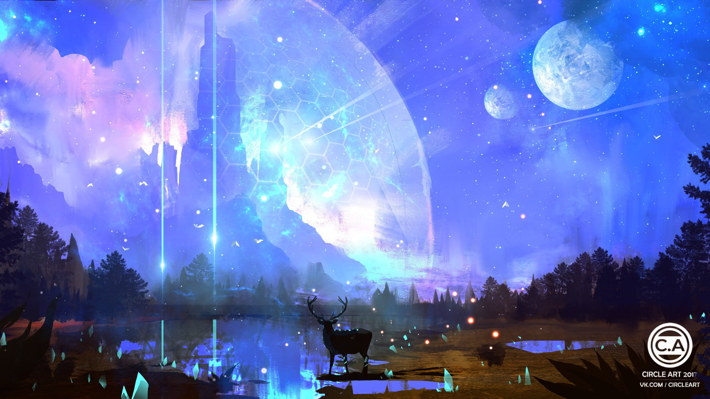

References
These are all of the references I used to create this site. I don't plan on publishing this site, and I am making it locally. So, I was able to use these images. Anything I haven't listed is something I have made myself.
| Resource | Source |
|---|---|
 |
thejakartapost.com. Here, the image source is shutterstock.com, but it isn't exactly the same, so they most likely edited it a little. |
 |
pluspng.com |
|  | wallpaperflare.com |
| Every image of a book cover | amazon.com |
| Images for: Classical Fiction, Epic, Folktale, Historical Fiction, Realistic Fiction, Romance, Science Fiction, and Personal Narrative | thoughtco.com, adultfantasygenreguide.wordpress.com, conversationsinliteracy.com, celadonbooks.com, opinionatedbooklover.com, redeemedreader.com, writerbyte.com, and truelifeimateacher.com repectively. |
 Other aesthetic images such as the header, footer, and details tag background as well as the seven different frames for the animation at the bottom. Other aesthetic images such as the header, footer, and details tag background as well as the seven different frames for the animation at the bottom. |
My sister, Shreya, and her amazing art skills :) |